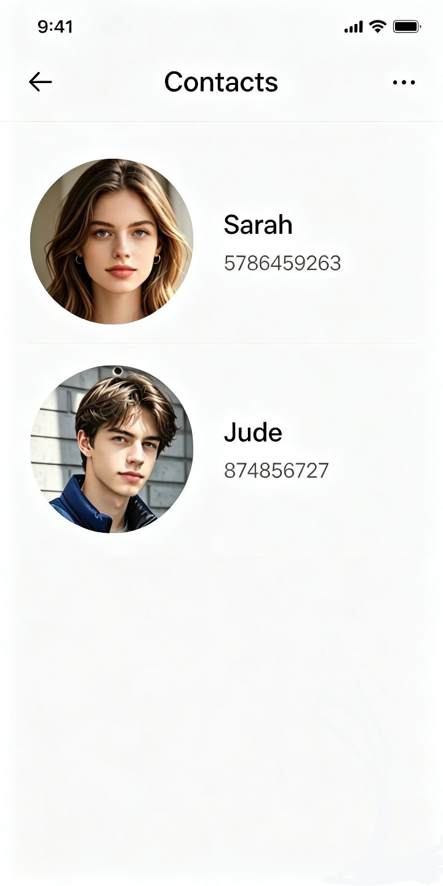

看接缝
看天顶
看地面
记录热点
—
拖动转视角 · 滚轮缩放 · WASD 微幅探身 · 看着门按住 W 走进去 · F 举起手机 · C 标定 · M 静音
⟳
把手机横过来
这一间屋子是宽的，竖着看只能看见一条缝
转不过来？点这里强制横屏
⟲ 方向反了，换一边
载入中…
‹
›
✕
▼

正在载入…
这一幕要用的画面和声音全部就位之后才开始
0.0 / 0.0 MB
设置
设 置
重新开始
关闭
存档 · 六格
空格子点一下存进去，有画面的点一下读取（会重开页面）。右上角 × 删掉那一格。
另外刷新页面会自动回到你离开时的场景，这个不占格子。
重新开始？
当前进度会被清空，从那个下雨的夜里重来一遍。
继续玩
重新开始
再走一遍